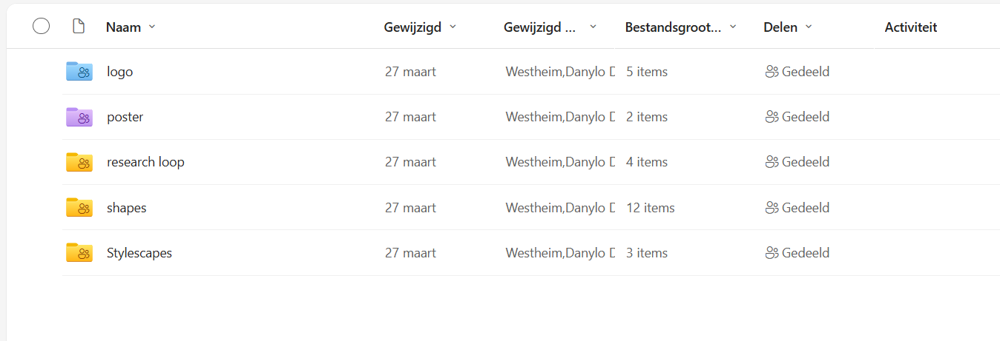

Loop - Media Agency
Trello
We set deadlines for ourselves with the use of a Trello board. This is also how we divided the tasks.

One Drive
We are using One Drive to share our documents. This is only for things like pictures, word documents and video’s. I like this method because it is easily accessible and clear.

Friends with "Benefits"
Shared documents
We are using a shared document to write down card questions. This way everyone can see each other’s cards and not write down similar things. We also want to encourage writing 20 cards per person, having a shared document helps keep track and get inspiration.
GitLab
Within our group we are using Gitlab rather than GitHub. The reason for this is because that way everything gets saved by Fontys Aswell, so if anything were to happen we’ll always have a backup. I had some struggles with GitLab at first. Turns out I was only able to view everything so I later asked the creator of the project, Jennifer, to make me a member of the project. Once that was fixed I still couldn’t figure out how everything worked. That is when I asked help from a teacher, Frank. He showed me how I could find everything. I did not let all of these struggles keep me from working. In the meantime I started working on my page on the website, the only thing I did differently was that I used GitHub so I could still save all the changes. After I learned how to work with Gitlab I copied all of my work into there. I had some struggles with pushing my code because the extension in Visual Studio kept loading but never finished. I asked another student if he could show me how to push code using the terminal. After he showed me once, I kept using that way.
Portfolio
Website
After finishing the Figma prototype and testing this with friends and family, I started developing. In order make it transferable and have version control, I'm using Github. Any time I had a specific section done I pushed my code so I always had it saved there. I started by first adding all the text and images. Afterwards I did the simple css like the placement of everything and colors. When that looked right, I added more details like the movement of the images and stars. I am also trying to make my website responsive, for now only the nav bar is responsive, but it is still a work in progress.
Now that I am in the last few weeks I have accomplished a lot on my website. At first I wrote the whole project out but now I am writing it down per learning outcome. I decided to not waste my time by trying to make the whole website responsive. I concluded that this is not necessary because my target audience are my teachers and they will most likely view it on a laptop.